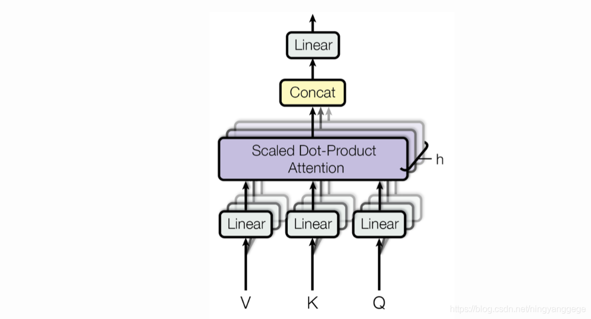

# MHA
多头注意力机制测试。
图片如下

代码测试
class Attention(nn.Module): | |
def __init__(self,config,hidden_dim=None): | |
super().__init__() | |
hidden_dim=config.embed_dim if hidden_dim is None else hidden_dim | |
self.n_heads=config.n_heads | |
self.n_kv_heads=config.n_kv_heads | |
assert self.n_heads%self.n_kv_heads==0 | |
self.n_groups=self.n_heads//self.n_kv_heads | |
self.head_dim=hidden_dim//self.n_heads | |
self.wq=nn.Linear(hidden_dim,self.n_heads*self.head_dim) | |
self.wk=nn.Linear(hidden_dim,self.n_kv_heads*self.head_dim) | |
self.wv=nn.Linear(hidden_dim,self.n_kv_heads*self.head_dim) | |
self.dropout_attn=nn.Dropout(config.dropout) | |
self.dropout_resid=nn.Dropout(config.dropout) | |
self.dropout_p=config.dropout | |
self.wo=nn.Linear(hidden_dim,hidden_dim) | |
self.is_flash=hasattr(F,'scaled_dot_product_attention') and config.is_flash # 默认使用 flash_attention | |
def forward(self,x, | |
position_embeddings: Tuple[torch.Tensor, torch.Tensor] = None, # 修改为接收 cos 和 sin | |
q=None,k=None,v=None,key_padding_mask=None): | |
# bsz,seq_len,embed_dim=x.shape,bsz*seq_len,patch_num,embed_dim=x.shape | |
if q is None: | |
xq,xk,xv=self.wq(x),self.wk(x),self.wv(x) | |
else: | |
xq,xk,xv=self.wq(q),self.wk(k),self.wv(v) | |
xq=xq.view(*xq.shape[:-1],self.n_heads,self.head_dim).permute(0,2,1,3) | |
xk=xk.view(*xk.shape[:-1],self.n_kv_heads,self.head_dim).permute(0,2,1,3) | |
xv=xv.view(*xv.shape[:-1],self.n_kv_heads,self.head_dim).permute(0,2,1,3) | |
if self.n_groups!=1: | |
xk,xv=( | |
xk.repeat_interleave(self.n_groups,dim=-3), | |
xv.repeat_interleave(self.n_groups,dim=-3) | |
) | |
if position_embeddings is not None: | |
cos, sin = position_embeddings | |
xq, xk = apply_rotary_emb(xq, xk, cos, sin) | |
# 处理 key_padding_mask | |
attn_mask = None | |
if key_padding_mask is not None: | |
# key_padding_mask: [bsz, seq_len], True 表示 mask 掉 | |
# 需要转换为 [bsz, 1, 1, seq_len] 以便广播 | |
attn_mask = key_padding_mask.unsqueeze(1).unsqueeze(2) # [bsz, 1, 1, seq_len] | |
# 使用 - 1e4 而非 - inf，避免 AMP 混合精度下的数值问题 | |
# FP16 的最小值约为 - 65504，使用 - 1e4 足够大且安全 | |
attn_mask = attn_mask.float().masked_fill(attn_mask, -1e4) | |
if self.is_flash: | |
dropout_p = self.dropout_p if self.training else 0.0 | |
out=F.scaled_dot_product_attention(xq,xk,xv,attn_mask=attn_mask,dropout_p=dropout_p,is_causal=False) | |
else: | |
scores=xq@xk.transpose(-2,-1)/math.sqrt(self.head_dim) | |
if attn_mask is not None: | |
scores = scores + attn_mask | |
logits=F.softmax(scores,dim=-1) | |
out=self.dropout_attn(logits)@xv | |
out=out.transpose(1,2) | |
out=out.reshape(*out.shape[:-2],-1) | |
out=self.dropout_resid(self.wo(out)) | |
return out |
公式测试行内测试
\text{MultiHead}(Q, K, V) = \text{Concat}(\text{head}_1, \dots, \text{head}_h)W^O